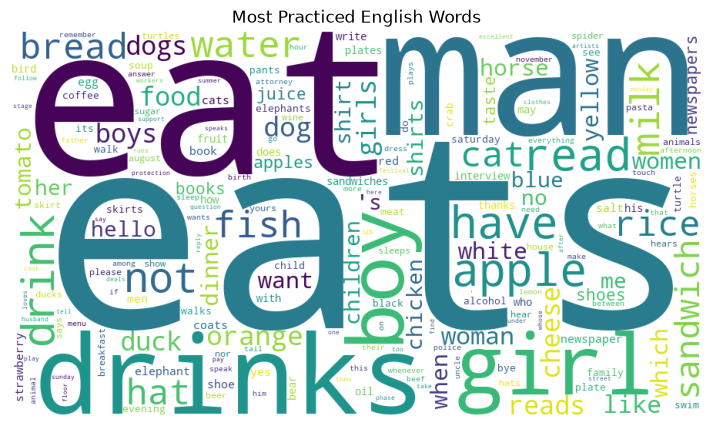

1. Mean Historical Accuracy by Language Learned
Hover over a bar to see the mean accuracy and the sample size for each language.
Takeaway: Historical accuracy is even across the six languages, spanning only about two percentage points from English at the top (90.7%) to French at the bottom (88.4%). The y-axis has been zoomed to 85–95% to make that spread visible (since on a full 0–100% scale the bars would look identical). Learners of French are the least accurate on words they have already seen, which is consistent with French spelling and pronunciation being harder to pin down than other languages such as Spanish or Italian.
2. Average Recall by Number of Past Exposures
Use the dropdown to focus on a single language, or leave it on “All” for the overall pattern. Hover any point for the average and the sample size for each bin.
Takeaway: As a learner sees more words, recall climbs from 89.0% for words seen 1–9 times to a peak of 90.2% at 20–29 past exposures, then drops to 86.9% for words seen 50 or more times. However, the bin sample sizes are very uneven. Of the 5,000 records, 64% (3,178) fall in the bin 1–9, and the number of records shrinks as exposures increase, down to only 88 in the bin 40–49 (the 50+ bin has 358 only because it groups together every word seen 50 times or more). Because the entire pattern spans about three percentage points, the averages for the smaller bins could be manipulated significantly from a few records, therefore the rise and drop should be read as a tentative trend rather than a significant result. This is even more true for individual languages, where some bins hold fewer than 10 records. If the drop is real, one possible explanation is selection of words rather than just forgetting: words a learner keeps being shown dozens of times may be the ones Duolingo's algorithm has flagged as difficult, so heavy exposure would be a sign of struggle rather than a cause of worse recall.
Visualization 3: Title
Takeaway: What this chart shows and what the reader should learn.
Visualization 4
Takeaway: What this chart shows and what the reader should learn.
5. Mean Recall by Day of Week
Click on the legend to select different languages.
Takeaway: Across all languages, recall stays within a narrow band of roughly 87% to 90%. However, the overall line dips in the middle of the week, falling from about 89.9% on Tuesday to a low of 87.0% on Wednesday and 87.6% on Thursday, then recovering to a peak of 90.0% on Saturday. Fewer reviews also happen mid-week, with Wednesday logging about half as many observations as Sunday (432 vs. 868). This suggests learners practice less and recall slightly less in the middle of the week, likely due to being busier. The individual language lines are much noisier than the overall average, especially for languages with few observations. For example, Portuguese's 71% on Tuesday comes from only 14 observations, so individual language patterns should be read with caution.
6. Learning Flow Between Languages
Hover over links to view more information.
Takeaway: We assume that UI language maps to the user's native language. Every learning path in our dataset runs through English. English-interface users study Spanish, French, German, Italian, and Portuguese, while users with a Spanish, Portuguese, or Italian interface are all learning English. The two biggest flows are near mirror images of each other: Spanish speakers learning English (1,226 users) and English speakers learning Spanish (1,220 users). Mean recall is high and fairly similar across all pairs, between 88% and 90% for most of them. The one exception is Italian speakers learning English, who recall about 95% of words, but this is also one of the smallest groups (143 users).
7. Most Practiced Words by Language
Pick a language to see which words learners practiced the most. Bigger words were practiced more often.

Takeaway: This visualization shows the most frequently practiced words in each language, with the size of each word indicating its frequency. Filler words like "the" and "a" are removed so that we can focus on the most important terms. Three themes emerged from these visualizations. The first theme is that across most languages there are certain words that are frequently practiced. This includes verbs that cover eating and drinking, which are the largest in most of the word clouds. Common nouns, or more specifically person nouns (like "man", "girl", "boy"), are also prominently featured. The final theme we see in these clouds is the prominence of food nouns. Even if you only read English, the same pattern appears across languages. Eat, come, and mange or man, hombre, and homme have similar relative sizes across clouds and mean the same thing in their respective languages. This likely reflects Duolingo's consistent focus on high-frequency vocabulary.
Summary of Findings
Summarize what you learned from the visualizations (2–3 conclusions tied to the project topic).
Future Work
Describe what could be explored next or how the analysis could be extended.